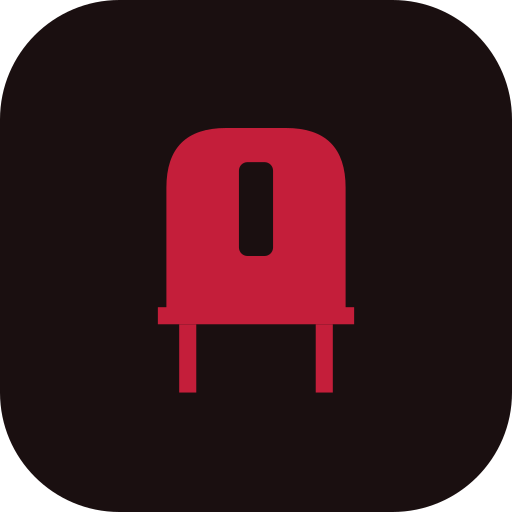
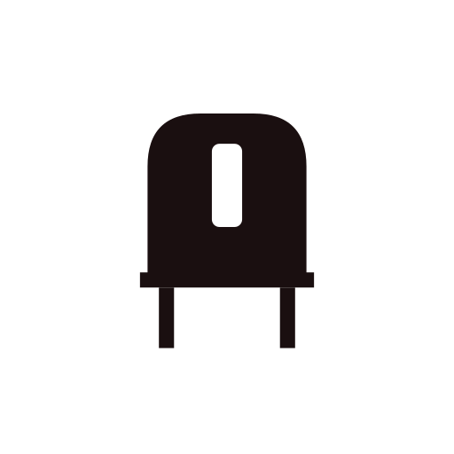
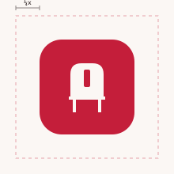
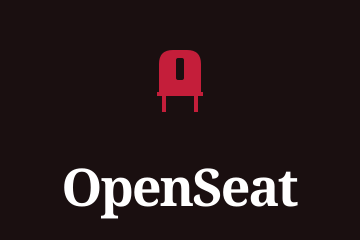
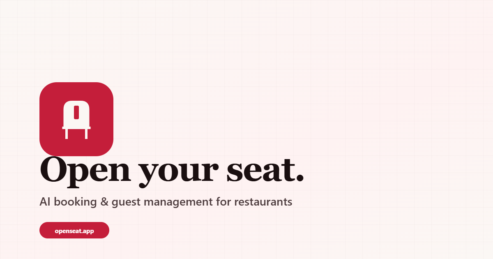

OpenSeat · Brand Guide · v1.0
Open your seat.
The OpenSlot mark, the palette, the type, and every asset you need — finalized and ready to ship.

The OpenSlot mark, the palette, the type, and every asset you need — finalized and ready to ship.
A chair seen head-on, with a reserved vertical notch carved from the backrest — an "open seat" waiting for the next guest. It works as a silhouette, holds up at 16px, and reads in a single ink.


Maintain clear space equal to at least ¼ of the mark's height on every side. Never crowd the mark with text or graphics.

64pxfavicon.svgPair the mark with "OpenSeat" set in Fraunces. Use the horizontal lockup in nav bars and headers; the stacked lockup for square placements.

Brand red leads. Warm paper and near-black ink carry everything else. Tints and accents are used sparingly for state and emphasis.
Fraunces for display warmth, Heebo for clean multilingual UI (Hebrew, English, Arabic), IBM Plex Mono for labels and data.
The mark adapts from a 16px browser tab to an app icon, a social avatar, and a 1200×630 share card.

| Path | Use |
|---|---|
mark/*.svg | 6 mark variants — primary, dark, white, reverse, mono ink/white |
wordmark/*.svg | Horizontal + stacked lockups, light & dark |
favicon/favicon.ico | Multi-res ICO (16/32/48) for legacy browsers |
favicon/favicon.svg | Modern SVG favicon (preferred) |
favicon/apple-touch-icon-180.png | iOS home screen |
favicon/android-chrome-{192,512}.png | PWA / Android |
avatar/*.{svg,png} | Circular-safe social profile images |
png/openseat-mark-*.png | Rasters 16 → 1024 (+ dark/white) |
social/og-image.png | 1200×630 share card |
tokens/tokens.{css,json} | Color, type, radius, shadow tokens |
email/signature.html | HTML email signature block |
<!-- Favicons --> <link rel="icon" href="/branding/favicon/favicon.svg" type="image/svg+xml"> <link rel="icon" href="/branding/favicon/favicon.ico" sizes="any"> <link rel="apple-touch-icon" href="/branding/favicon/apple-touch-icon-180.png"> <link rel="manifest" href="/branding/site.webmanifest"> <!-- Social --> <meta property="og:image" content="/branding/social/og-image.png"> <meta name="twitter:card" content="summary_large_image"> <meta name="theme-color" content="#C41E3A">